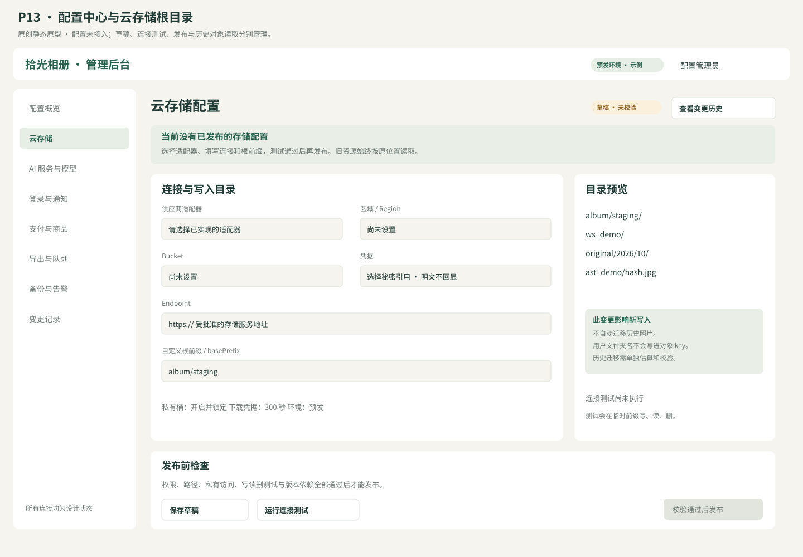
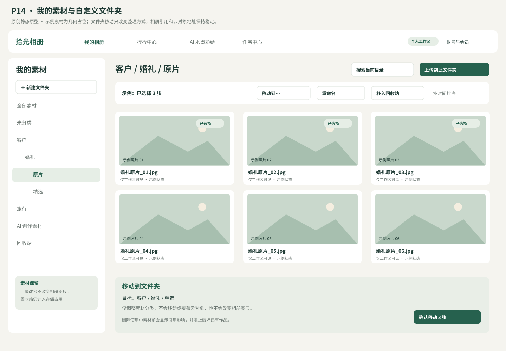
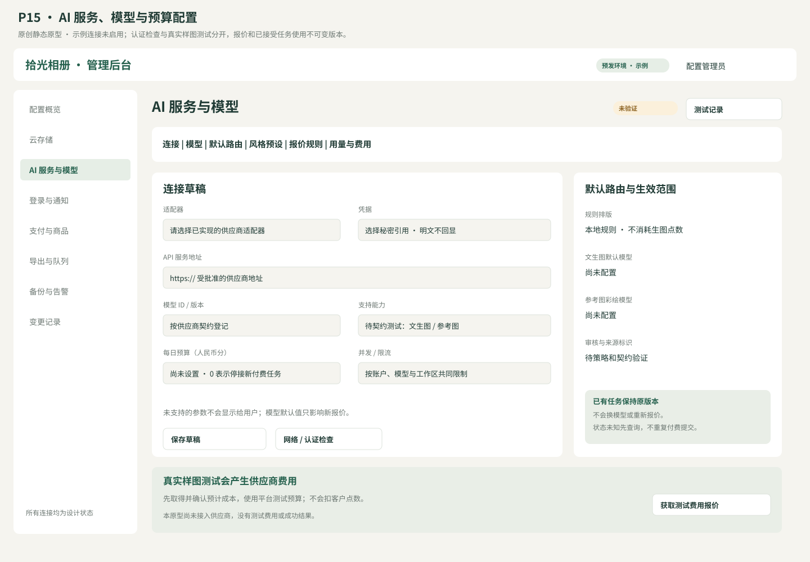

日期：2026-10-21（北京时间）。状态：供评审的功能规格；不是已实现后台，也不是已联通云服务。继承 v0.3 基线的产品范围，本轮修补云存储、文件夹、AI 及其他运行配置的缺口。
此前文件已经覆盖编辑器、登录、会员、导出与 AI 的主业务方向，但配置功能尚不完整。v0.1 只列出对象存储、AI endpoint/key 和环境配置，未定义配置字段、用户文件夹、发布回滚和故障行为；C1 计划仅交付本地编辑与导出，不能替代云服务与运营后台。
本轮补齐的是配置中心的设计合同。正式 OpenAPI、迁移、各供应商适配器、后台代码、真实连接测试及全部模块实施计划仍在后续开发中生成，不能据此宣称产品已具备完整上线条件。
首期推荐“平台统一接入＋工作区个性设置”：平台管理员配置存储与 AI 服务，用户配置素材文件夹、相册默认参数和通知偏好。两种自定义目录分别设计：后台存储根前缀，以及用户可见的逻辑素材文件夹；后者不直接暴露云对象 key。
“自定义文件夹”正在向用户确认具体所指。在答复前，两类均列为推荐规格，不能记为用户已经确认。工作区自带存储／自带 AI Key（BYOS／BYOK）作为候选扩展，首期默认关闭；若用户要求首期开放，需要另补授权、费用、密钥托管与故障责任合同。
本增补若评审通过，C3–C5 开工前必须将其拆入对应详细计划；当前 C1 计划不等同于这些模块的实施计划。
配置中心让运营者在后台维护合法的业务参数，部署参数与密钥由受控环境管理。网页和小程序只接收自己需要、允许公开的参数；修改页面上的输入框不能改变计费或资源权限。
| 层级 | 内容 | 修改者 | 生效方式 |
|---|---|---|---|
| 部署 | 数据库／Redis 地址、密钥服务、配置服务引导、worker 硬内存／进程限制、环境标识 | 部署运维 | 环境秘密配置＋受控重新部署，不放进依赖同一数据库的动态编辑表单 |
| 平台／环境 | 存储 profile、AI 服务、微信／支付接入引用、默认策略、能力开关 | 授权的平台管理员 | 草稿校验、连接／契约检查、原子发布 |
| 商业／内容 | SKU、点数报价、模板／字体／风格版本、内容审核与标识规则 | 财务／内容各自角色 | 版本发布，历史订单／作品不改写 |
| 工作区 | 素材目录、默认相册尺寸／模板、通知和共享偏好 | owner/admin；编辑者受限操作 | API 校验后按 revision 保存；不能提高会员配额或覆盖平台禁用 |
| 个人 | 语言、展示时区、快捷键、编辑器界面偏好 | 当前用户 | 账户偏好，不改变跨端文档尺寸／色彩模型 |
环境固定 dev/staging/prod；不得让业务请求传 env 来切换存储或支付账户。推荐平台管理员初始只有一个受控管理员入口，后续可分工；AI 开发身份不自动获得真实生产账户权限。
后台导航：配置概览、云存储、AI 服务、模型路由、登录与通知、支付渠道、商品权益、模板字体、导出队列、内容与分享、运维告警、变更记录。
| 权限 | 平台运维 | 财务运营 | 内容运营 | 工作区 owner/admin |
|---|---|---|---|---|
| 存储／AI 连接草稿与测试 | 按授权可操作 | 仅成本摘要 | 仅可用能力 | 不可见平台凭据 |
| SKU／点数价格 | 查看 | 编辑／发布 | 查看用户展示项 | 仅购买者视图 |
| 模板／字体／风格许可 | 查看 | 查看 | 编辑／发布 | 使用合法版本 |
| 配置发布／回滚 | 专项权限＋重新验证登录 | 仅商业命名空间权限 | 仅内容命名空间权限 | 无平台权限 |
| 素材文件夹／默认设置 | 不因角色自动读用户照片 | 无用户素材访问 | 无用户素材访问 | 按工作区角色操作 |
| 读回密钥明文 | 禁止 | 禁止 | 禁止 | 禁止 |
每次修改记录操作者、角色、原因、请求 ID、变更前后版本摘要和环境。审计不存密钥、原始照片或完整提示词。管理员看“连接可用”不等于可访问所有工作区的原片。
ConfigVersion：id、namespace、version、environment、schemaVersion、payload、secretBindings、dependencies、baseVersion、state、validationReport、createdBy、createdAt、publishedAt。
secretBindings 只存 secretRef＋不可变 secretVersion；payload 禁止 key/token/password/certificatePrivateKey 等明文字段。ConfigRelease 引用一组相容 ConfigVersion、releaseId、effectiveAt、reason；当前 release 指针在事务内切换。进程刷新失败时继续使用上一已验证快照并告警，不混用新模型与旧价格。
状态为 draft→validated→published→retired；已发布版本不可修改。更新产生新草稿；draft 同时编辑须 baseVersion/If-Match，冲突返回409。没有有效配置是 unconfigured，不能当成“连接成功”。
发布流程：编辑草稿 → 结构／权限／依赖校验 → 查看影响范围 → 必要连接／契约验证 → 发布 → 观察。影响预览列出新增请求路由、存储新写入位置、预计费用参数变化、现有快照是否保持、需要重新配置的平台项。
回滚是重新发布旧版本组合，必须复验密钥是否仍有效、依赖是否兼容；不能恢复已经撤销的凭据。回滚配置不回滚账本、不删新产生的文件、不改旧订单和既有任务。紧急停用独立为有审计的拒绝新请求开关；查询／结算／安全删除仍可按规则继续。
GET /v1/capabilities 返回当前客户端可用能力：available／disabled／unconfigured／degraded、通用原因和 action；不返回存储桶、内部 endpoint 或密钥引用。配置缺失时可以进入已有作品读取／本地恢复，不展示可用的云上传、购买或生成成功按钮。
上线就绪矩阵分别检查：存储可写可读、字体与模板许可、微信应用能力、支付渠道、AI 模型契约／预算／审核、worker／备份／通知。某一检查通过只使对应能力就绪，不能产生全站“已验证完整”标签。
首期需要配置版本、权限、草稿／测试／发布／回滚、密钥轮换、连接状态、能力开关和审计。按百分比自动灰度、多区域调度、工作区自带密钥、配置可视化脚本编排为后续扩展；不得通过任意脚本／任意 URL 来替代尚未开发的适配器。
平台存储根目录决定云对象放在哪里，例如 album/prod/workspaces/...；用户素材文件夹决定素材库如何组织，例如“客户／张女士／婚礼原片”。两者独立：重命名用户文件夹不需要复制整个云存储目录，也不改变相册中的 assetId。
当前推荐两者都支持，用户尚在确认自定义文件夹的具体范围。本章作为推荐设计，不将其自动记为已确认功能。
profile 按环境隔离、按版本发布；首期一个默认写入 profile，可有多个旧只读 profile。供应商候选为阿里 OSS、腾讯 COS 和 S3 兼容存储；每个 adapter 独立实现、测试后才允许启用，不能宣称填任意 S3 地址就必然兼容。
| 字段 | 类型／约束 | 用途 |
|---|---|---|
| id／version／environment | 不可变引用 | 新请求与历史对象位置追溯 |
| provider／adapterVersion | oss/cos/s3；必须已有实现 | 选择对应签名、分片和校验逻辑 |
| region／endpoint／bucket | 必填，HTTPS，批准主机 | 服务端存储连接；不允许通过客户端传参替换 |
| credentialRef／credentialVersion | 必填秘密引用 | 分离读／写／清理权限，禁止明文回传 |
| basePrefix | 1–256字符、非空相对前缀 | 自定义根目录；禁止 / 开头、反斜线、..、控制字符及编码后越界 |
| keyPatternVersion | 首期仅 v1 |
固定 token，不接受任意表达式 |
| publicAccess | 固定 false | 原片／预览／产物全部私有；分享仍先鉴权 |
| downloadDomain／cdnMode | 可选，需私有签名能力 | 没有验证签名的 CDN 时使用源站短期 URL，不开放公共桶 |
| allowedOrigins | 精确 HTTPS 域名集合 | 网页上传／预览 CORS，不使用带凭据的 * |
| uploadTtlSeconds／downloadTtlSeconds | 建议900／300；正整数≤3600 | 短期凭据有效期；不承诺 URL 可即时逐条撤销 |
| encryptionMode | providerManaged／kms | 仅支持 adapter 已验证模式；KMS 需对应引用和权限 |
| multipartThresholdBytes／partBytes | 依供应商能力校验 | 首期若不实现分片则 UI 标为不支持，不接受假配置 |
| retentionPolicyRef／quotaPolicyRef | 发布版本引用 | 回收期、导出过期、容量与成本告警 |
推荐对象 key 规则：{basePrefix}/{workspaceId}/{kind}/{yyyy}/{mm}/{assetId}/{contentHash}.{ext}；kind 仅 original／normalized／preview／document／font／template／generated／export／temporary。yyyy/mm 为创建时 UTC 年月。生成结果、导出产物也通过相应 ID 存储，不使用用户文件夹名、客户姓名、原始文件名或请求中的路径拼 key。
后台提供“路径预览”：输入示例工作区、素材类型后显示展开结果，提示此变更只影响新写入。prefix 改名不是旧文件自动迁移；保存前校验同环境 profile 不会覆盖其他业务对象。
连接测试：使用独立随机测试 key，在限定 temporary 前缀执行 PUT→GET→校验字节／hash→DELETE→确认清理。只列出桶不算写读通过；删除失败显示清理告警并纳入回收。禁止测试动作删除 prefix 下既有对象；不自动创建公共桶或扩大凭据权限。
上传流程：鉴权和配额预占 → 服务端生成唯一 key／受限凭据 → 客户端上传 → complete → HEAD／magic／解码验证 → ready 或 rejected。25MB／80MP 等限制由服务端强制；归一化图／预览单独保存；照片不因上传云端自动发给 AI 供应商。相同工作区按 hash 提示重复，不向其他工作区泄露去重结果。
素材记录至少有 workspaceId、assetId、origin、originalFilename（私有展示字段）、hash、width/height、state、folderId、createdAt；对象位置单独存 StorageObject{storageProfileId,profileVersion,bucket,key,objectVersionId,sha256,variant}。不可在读取时用当前 basePrefix 反推旧路径；相册文档继续只引用稳定 assetId。
推荐功能：新建、重命名、移动、批量移入、搜索、面包屑、按名称／时间排序、文件夹内上传与回收站。首期覆盖照片／生成素材库；相册项目列表独立分类，跨页排序不是文件夹排序。标签／智能相册可后续加入。
AssetFolder{id,workspaceId,parentId,name,normalizedName,revision,createdBy,createdAt,deletedAt}。根目录为固定虚拟节点；同工作区同父级活跃文件夹名称唯一，采用 NFC＋大小写折叠比较。名称1–80个Unicode码点，禁止 /、\、控制字符、.、..，最大10级；前后空白去除。用户展示名不被用于对象 key。
移动用事务检查工作区、角色、目标存在、循环、深度、名称冲突及 expectedRevision。两次并发重命名只有一个成功，另一方409；跨工作区移动首期拒绝，不能用“换 folderId”改变所有权。文件夹不提供独立外部共享 ACL，继承工作区权限，避免让移动操作绕过权限。
建议工作区 owner/admin/designer 可管理素材和目录，viewer 只读；是否开放 designer 删除由角色策略控制。小程序可选择／新建简易目录、上传到目录、浏览／搜索；复杂批量移动可在网页完成，接口一致。
删除界面显示子文件夹／素材数量以及“移入回收站，不会立即删除云对象”。首期使用中素材不直接删除：列出引用相册／活动任务数量，整批拒绝会破坏引用的目录删除；用户可以先独立移动未引用项，再清理无引用目录，不执行隐含的部分成功。不能级联静默移除作品中的图片。目录树删除／恢复按 operationId 和原 parentId 追溯；恢复时若同名冲突，提示重命名或改目标，不覆盖现存目录。
回收期建议30天；超过期限物理清除前再次检查 revision、正在处理任务的 pin、合法保留要求和备份策略。会员到期／配额超额限制新增上传，保留现有访问与下载，不自动清空素材。逻辑移入回收站不代表已释放物理存储配额；配额在确认物理对象清理后更新，向用户解释占用来源。
切换默认 profile／basePrefix 只改变新上传和新产物写入。旧素材按对象记录读取；旧凭据在历史资源仍需读取时不能直接撤销。后台须展示每个 profile 的对象数、字节、活动任务引用和可否退役。
历史迁移为独立任务：选范围→预估流量／存储费用→确认→复制→逐对象校验尺寸与SHA→条件更新locator→保留旧副本→引用核对→按保留策略清理。数据库不进行全局字符串替换；活动导出快照 pin 的旧 locator 保留到任务结束，迁移不能令已冻结快照失效。失败从逐对象检查点续传；回滚路由不自动删除新副本。跨区域迁移还需明确用户数据位置政策与供应商能力。
下载先验证成员／分享权限，再发5分钟签名 URL。分享撤销后不发新 URL；已签发直连 URL 在有效期内可能仍可用。若要求即时撤销，必须使用网关／CDN边缘鉴权，不能把短期签名当即时撤销。私有 CDN 需要密钥、缓存 key、到期与源站回源策略实测后启用。
配额按工作区、资源类别与物理占用计算；上传预占→校验成功转已用→失败释放，防止并发超额；去重计量规则只在工作区内生效。原片、归一图、版本与回收站单列用量；平台公共字体／模板字节不重复计入每个工作区存储，工作区自有生成素材计入。导出临时文件保留建议7天；未完成上传临时对象24小时清理，但不删除活动上传／任务 pin。
数据库备份与对象备份分开配置，恢复时重放删除标记。不能把“迁到新桶”当备份，也不能让云生命周期规则独立删除仍被项目引用的原片；后台发布保留策略时检查这种冲突并阻断。
| 能力 | 执行方式 | 费用与隐私 |
|---|---|---|
| 规则智能排版 | 自有规则／模板引擎 | 默认不调用外部生图、不消耗生图点数 |
| 标题／章节建议 | 可选文本模型 | 独立 capability 与报价，不作为完整成册的强依赖 |
| 文生图 | 生图 provider/model | 接受任务前报价，成功一次结算 |
| 参考图水墨／彩绘 | 支持图生图的 model | 明确参考图用途与传输；原片保留，结果新建素材 |
| 内容审核与来源标识 | 自有／供应商适配器 | 配置失败时阻断相应生成／发布，不隐藏缺口 |
不能只提供一个 API Key 输入框就宣称这些能力全部可用。OpenAI 兼容聊天接口不等于兼容生图、参考图、异步查询或取消；每个 adapter 必须声明能力并通过契约用例。
| 字段 | 约束与意义 |
|---|---|
| id／version／name／environment | 不可变版本，友好名称与环境隔离 |
| adapterId／adapterVersion | 选择已实现的供应商适配器；没有适配器的连接不能发布为可用 |
| baseUrl | 经平台批准的 HTTPS 地址，不拼接用户提供 URL |
| apiKeyRef／secretVersion | 服务端秘密引用；不得进入网页／小程序包 |
| authMode | adapter 预定义 bearer／签名等，不开放任意认证脚本 |
| accountProjectRef／region | 可选；供应商项目、区域等公开配置与秘密配置分离 |
| connectTimeoutMs／requestTimeoutMs | adapter 约定范围，默认5秒连接／60秒单次请求；异步任务不把整个生成时长当一次HTTP超时 |
| maxConcurrent／requestsPerMinute | 正整数，平台／供应商／工作区限制取最严；服务端原子执行 |
| dailyBudgetFen | 生产必填非负整数；0表示停止新付费任务，不表示无限；预算日按 Asia/Shanghai，账本时间仍存 UTC |
| allowedDataUse／retentionPolicyRef | 参考图可否传输、保留／训练用途声明、删除能力和服务区域；在用户确认前展示实际适用政策 |
| enabled／healthStatus | disabled／unconfigured／ready／degraded；禁用默认只停新任务，已有任务仍可查询／终结 |
生产 secret 来自密钥服务。预算预警阈值默认80%，达到100%停止接受新的付费生成；已接受任务保留预算预占，不因日切或降额度重复扣用户点数。采购成本与对用户点数定价分开，不能把供应商金额直接当点数余额。
ModelVersion：id、version、providerConnectionId/version、providerModelId、providerModelVersion、displayName、capabilities、inputSchemaVersion、outputSchemaVersion、parameterSchema、limits、licenseRef、commercialAllowed、labelPolicyRef、moderationPolicyRef、estimatedCostRuleRef、testReportRef、state。
capabilities 至少区分 textToImage／imageToImage／textSuggestion／asyncQuery／cancel／idempotentSubmit；unsupported 的能力不显示可点操作。模型列表可手动登记，供应商没有列模型 API 时不伪造自动发现；“认证成功”也不代表登记的模型能推理。
参数按 adapter 白名单映射：prompt／negativePrompt（若支持）、ratio 或 width/height、imageCount、referenceStrength、seed、steps／guidance（若支持）。不支持参数隐藏或只读说明；不偷偷忽略用户参数。尺寸、像素、格式、提示词长度、参考图张数／大小均由模型版本限制，超出先拒绝再报价。
首期建议每个生成子任务1张图；多张请求拆成子任务各自报价与终态，避免半成功费用含糊。seed 只在供应商支持时展示，明确不承诺供应商逐像素复现。
模型许可证记录来源、条款版本、商业范围、地域／内容限制、是否允许参考图及生成结果商用；有效期变化不能抹掉已有结果来源。供应商或模型“可商用”仍不能代替用户对参考图的合法授权。
RouteVersion 按 capability 绑定首选 ModelVersion 和可选备用。首期默认单个确定模型；路由切换影响新报价，不改变已接受任务。后台可以分别选择排版标题建议模型、文生图模型、参考图彩绘模型和审核策略，不用一个全局默认覆盖所有能力。
自动备用只允许在确定尚未被上游接受的阶段使用，且仍满足已经报价的能力／质量／费用合同；否则撤销报价并请求重新确认。提交超时或状态未知时保持原 providerRequestId 查询，禁止自动跨模型再付费提交。
PresetVersion：id／version、名称／分类、原创或授权来源、支持模型与参数模板、可编辑参数、示例及其用途许可、报价策略版本、审核／标识策略、状态。首期初始候选为山水水墨、人像淡彩、花鸟写意；示例在实际授权或原创生成后制作，不能复制受限 Zine 示例。非商业、许可不明、过期或依赖未就绪预设不能上架。
文字模板只允许定义好的插值字段，不执行模型返回代码／任意模板表达式。生成图插入为图片层，标题、姓名、日期仍独立文字层，改字不触发生图和重复扣点。
Quote 固定 configReleaseId、routeVersion、modelVersion、presetVersion、costRuleVersion、点数、预估供应商成本、输入hash／参考图授权、有效期；建议有效5分钟，未接受不预占点数。接受时检查未过期、模型能力／预算可用、参考图可访问，再在事务内预占用户点数与平台成本预算，生成幂等任务和 outbox。
任务冻结上述业务版本及供应商连接／秘密版本引用；任何配置发布不能改写运行中的 prompt、模型、价格或输出规格。紧急泄露凭据可以立即撤销，此时受影响任务先查询／终结，不把密钥轮换当作可重复生图的理由。
预算控制使用供应商／环境的当日预占＋已发生费用；预算归属稳定 accountBillingId，不因连接版本、密钥轮换或模型切换归零。同一采购账户下多个连接共享账户预算并叠加各自上限。保守预算不足时拒绝新任务，防止并发请求穿透预算。日切保留旧日未终局预占；查询供应商成本与用户点数结算分别对账。非收费的 query 若供应商按请求计费，仍纳入平台成本记录。
明确成功且审核通过后结算一次；明确失败／拒绝释放一次；未知状态查询并保留预占，建议终局上限30分钟，可按供应商合同调整。超过终局时限按既有会员文档释放、迟到结果不再次扣点／发布。不能由管理员把状态任意改为成功来绕过账本。
输入参考图先验证当前工作区授权、格式、尺寸和用户用途确认，仅对选中的参考图生成短期供应商可用输入；不把全部相册上传。默认不向供应商泄露GPS和原始文件名。
输出由服务端拉取／接收：只允许供应商已批准结果域名，限制下载大小、重定向、超时和实际解码像素；校验 MIME／magic／hash。进入 quarantine→审核／标识处理→ready，合格结果入私有素材库；网页不直接把上游临时 URL 当永久图片引用。
连接测试分三层：网络／认证检查、能力契约检查、真实样图检查。真实样图测试明确显示预计费用，由平台测试预算承担；使用自制描述／授权参考图，不使用客户原片。结果报告实际模型、参数、生效配置版本、耗时、上游任务ID、可追溯输出与实际成本。
适配器契约必测：同步成功、异步查询、明确拒绝、鉴权失败、429、提交超时但上游已接受、重复回调、取消竞态、坏结果和恶意URL。测试通过前模型状态为 unverified，不出现在用户可用模型列表。
后台提供连接、模型、路由、预设、报价、用量／费用、测试记录及密钥轮换页面。列表显示可用能力、最后测试时间、版本和预算；日志显示任务号与错误类别，不显示完整密钥／提示词。
用户界面仅可选择已发布风格／允许模型、支持的画幅／强度／张数、素材目录和当前用途；隐藏平台 endpoint、供应商秘密和采购成本。工作区不允许用偏好参数提高配额、跳过审核或覆盖标识政策。BYOK 若以后启用，另行设计工作区秘密托管、供应商费用归属及是否收取平台服务点数，不能默认为免计费或允许绕过内容规则。
下表是首期必须设计／实现的配置面，不表示代码已经存在。推荐默认值仍需在对应单元验证；生产凭据、价格、供应商选择和保留政策在接入前确认。
| 配置域 | 必备配置 | 界面／修改者 | 研发归属 |
|---|---|---|---|
| 系统／环境 | 产品名、站点域名、支持联系方式、协议／隐私版本、web／mini能力开关、维护模式 | 平台设置；部署域名受白名单控制 | C3／发布 |
| 云存储 | provider、region、bucket、endpoint、secretRef、根前缀、私有下载、CORS、保留／配额 | 云存储后台；仅平台运维 | C3 |
| 用户文件夹 | 新建、层级、名称、移动、批量整理、目录内上传、搜索、回收／恢复 | 素材库；工作区角色 | C3 |
| 上传／素材 | JPEG／PNG、25MB、80MP、500张／项目、预览尺寸、去重、未完成上传清理、使用中删除规则 | 配额策略；用户仅查看限制 | C3 |
| AI 供应商 | 适配器、endpoint、凭据引用、超时、并发、限流、预算、数据用途 | AI连接后台 | C5／C4预算 |
| AI 模型／路由 | 能力、默认模型、参数白名单、尺寸、参考图、路由版本、备用条件 | 模型／路由后台 | C5 |
| AI 风格／报价 | 原创／授权、版本、示例、支持模型、用户点数、成本规则、5分钟报价 | 内容＋财务分权 | C5／C4 |
| 登录／账号 | 网页／小程序AppID、登录回调域、secretRef、会话期限、绑定、注销；短信可选 | 登录后台；生效受平台能力约束 | C3 |
| 工作区／授权 | 角色、席位字段、可用功能、容量／并发权益、兑换码规则 | 权益后台；工作区不能改平台授予值 | C3／C4 |
| 支付 | 商户／应用、证书／签名key引用、回调、渠道capability、查询／退款、商品映射 | 支付配置；实际准入验证 | C4 |
| 商品／会员 | SKU版本、价格（分）、天数、额度／赠送、有效期、退款规则、停售 | 财务后台；价格须经营者确认 | C4 |
| 相册默认值 | 场景、单页尺寸、内页跨页数、出血3mm／安全区5mm建议值、默认模板 | 新建相册／工作区偏好 | C1／C3 |
| 编辑器／排版 | 33配方版本、强度、字体版本、模板槽位、排版硬约束／评分、候选数量 | 内容与规则后台；不允许任意执行脚本 | C1／C2／C5内容 |
| 导出 | PNG／JPG／PDF、72／150／300DPI、singlePage／spread、50MP、内存预算、警告确认、产物7天保留 | 导出策略＋用户允许的选项 | C1／C4 |
| 队列／worker | 并发、租约、重试3次／10/30/90秒建议退避、公平调度、取消、OOM规则 | 运维策略，不超过部署硬上限 | C4 |
| 审核／AI标识 | 审核provider／secretRef、政策版本、参考图用途、来源追溯、显隐标识规则、拒绝／申诉入口 | 内容／合规配置；上线前核验实际规则 | C5 |
| 分享／下载 | 默认私有、分享有效期、撤销、短期URL300秒、是否使用网关即时鉴权 | 用户授权范围内设置；平台定义上限 | C3／C4 |
| 通知 | 小程序订阅消息、站内通知、短信可选、事件模板、凭据、用户授权／退订 | 平台模板＋个人偏好 | C3／C4／发布 |
| 备份／删除 | DB备份、对象版本／备份、恢复、30天回收建议值、删除标记、日志保留 | 运维部署＋公开政策 | 发布 |
| 监控／运营 | 存储／生成成本、失败率、队列延迟、80%／100%预算告警、受控告警目的地、审计 | 运维／财务按权限查看 | C4／C5／发布 |
推荐在后台概览显示每域状态、负责人角色、有效版本、未配置项及最近测试，而不是一个笼统的“系统设置”。Redis／数据库／秘密服务的根连接保留在部署配置，不能要求从一个尚未连接的数据库里读取自己的地址。
本节为接口合同建议；正式 OpenAPI、DTO、迁移及错误码枚举在对应计划中落地。
新增实体：config_versions／config_releases／config_tests／config_audit_events、storage_profiles／storage_objects／storage_migration_items、asset_folders／folder_operations、ai_provider_versions／ai_model_versions／ai_route_versions／cost_rule_versions／provider_budget_reservations。现有 project/revision、job/snapshot、asset、SKU、ledger 复用，不复制第二套账本。
| 接口 | 合同要点 |
|---|---|
| GET /v1/admin/config/overview | 各域状态与公开摘要，按角色过滤；不回传秘密 |
| POST /v1/admin/config/{namespace}/drafts | baseVersion、payload、secretBindings；结构／权限校验 |
| PATCH /v1/admin/config/drafts/{id} | If-Match；409冲突；密钥只能更换引用或新版本 |
| POST /v1/admin/config/drafts/{id}/tests | testKind=connection/contract/sample；样图需成本确认／测试预算 |
| POST /v1/admin/config/releases | versionIds、testIds、reason；原子发布一致组合，检查测试与配置hash绑定 |
| POST /v1/admin/config/releases/{id}/rollback | reason、expectedCurrentRelease；复验有效性并生成新release，不覆写历史 |
| GET /v1/admin/config/audit | 时间／操作者／命名空间筛选，按权限返回脱敏差异 |
| GET /v1/capabilities | 客户端允许的能力、状态、通用原因，禁止泄露内部连接信息 |
| GET /v1/workspaces/{wid}/folders | parentId、cursor、search；工作区权限；回收站单独状态 |
| POST /v1/workspaces/{wid}/folders | parentId、name、operationId；名称唯一、层级与权限校验 |
| PATCH /v1/workspaces/{wid}/folders/{fid} | name/parentId、expectedRevision；防循环／跨工作区 |
| POST /v1/workspaces/{wid}/assets/batch-move | assetIds、targetFolderId、operationId；逐项校验；同事务提交或返回明确未提交错误 |
| POST /v1/workspaces/{wid}/folders/{fid}/trash | expectedRevision、operationId；预检引用影响，拒绝破坏使用中素材 |
| POST /v1/workspaces/{wid}/folders/{fid}/restore | targetParentId、name、operationId；同名冲突不得覆盖 |
| GET /v1/workspaces/{wid}/storage-usage | 活跃／回收／版本／预占字节与权益上限，不泄露其他工作区 |
| POST /v1/admin/storage-migrations | sourceProfile、targetProfileVersion、范围、估算确认；异步、检查点／取消／审计 |
浏览／选择模型在已有公开 generation preset API 中提供，生成任务仍走既有 quote→job；不另建能跳过报价／预算的“直接调用模型”用户接口。管理样图测试使用独立测试任务和平台测试预算。
| ID | 操作／故障 | 通过条件 |
|---|---|---|
| CFG-01 | 普通用户请求后台配置／财务角色改AI密钥 | 拒绝；公开能力与日志均不泄露秘密 |
| CFG-02 | 两管理员修改同草稿、发布期间worker刷新失败 | 409冲突；进程只使用一份完整有效release，不混新旧价格 |
| CFG-03 | 写入新key、错误key、轮换后回滚已撤销key | 明文不可读回；错误不可启用；无效旧key不能复活 |
| CFG-04 | 仅认证测试通过但模型未实际验证 | UI区分测试层级，未验证能力不显示可用 |
| STORE-01 | 配置 basePrefix 并预览；尝试 ../、绝对路径、编码越界 | 合法新对象位置符合规则；非法路径拒绝；客户端不能自选key |
| STORE-02 | 改prefix后读旧照片、导出已接受任务 | 仍用旧locator，原片读取和快照不受新路径影响 |
| STORE-03 | 随机写读删测试中删除失败 | 显示测试范围／残留清理告警，不删除既有对象 |
| STORE-04 | 迁移中断、hash错误、活动任务pin旧文件 | 失败不更新locator；可续传；活动引用的旧对象保留 |
| FOLDER-01 | 新建、重命名、跨层移动、同名／循环／11级目录 | 合法操作成功，冲突／越界明确拒绝；对象key不变 |
| FOLDER-02 | 两工作区ID混用、viewer移动、跨区批量移动 | 无越权；整批不出现部分静默成功 |
| FOLDER-03 | 删除有项目引用目录、回收后同名恢复 | 显示影响并保护引用；恢复不覆盖；物理删除按引用与保留策略 |
| AI-CFG-01 | 聊天兼容接口被登记为图生图、未支持参数传入 | 能力契约拒绝；不静默丢参数，不进行付费调用 |
| AI-CFG-02 | 提交超时后切换全局默认模型 | 旧任务查询旧供应商，无第二次付费提交；新报价用新版本 |
| AI-CFG-03 | 预算仅够一次，10并发请求，跨北京时间零点未终局 | 只接受预算内任务；旧预占不清零；用户点数不重复结算 |
| AI-CFG-04 | 点击真实样图测试 | 先展示费用并确认，使用测试预算，不扣客户点数 |
| AI-CFG-05 | endpoint／结果URL指向内网、重定向或DNS重绑定 | 阻断；秘密不发送到未经批准主机；错误脱敏 |
| AI-CFG-06 | 回收参考图、恶意结果／坏图、标识审核缺失 | 新任务拒绝无权参考；输出隔离并给明确失败，不当ready素材 |
| CONFIG-ALL-01 | 遍历覆盖表20个域 | 每域都有schema／权限／有效版本／未配置行为／验收证据；尚未开发不显示已完成 |
这些是未来产品必须执行的验收案例，当前只检查文档与静态原型完整性。用户在生产配置、真实联调完成前不能获得“所有功能完整”的误导性承诺。
自定义文件夹范围：正在确认；当前推荐后台根前缀＋用户素材文件夹。实际接入再一次确认云供应商／区域／桶、AI供应商／模型及数据用途、商品价格／点数、平台资质与部署预算。无需用户逐字段设计；技术默认值由AI实现并在验证证据中说明，涉及费用／数据用途的选择由用户确认。


